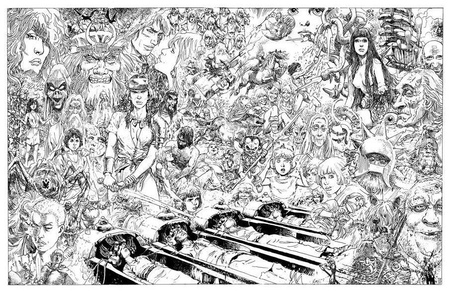
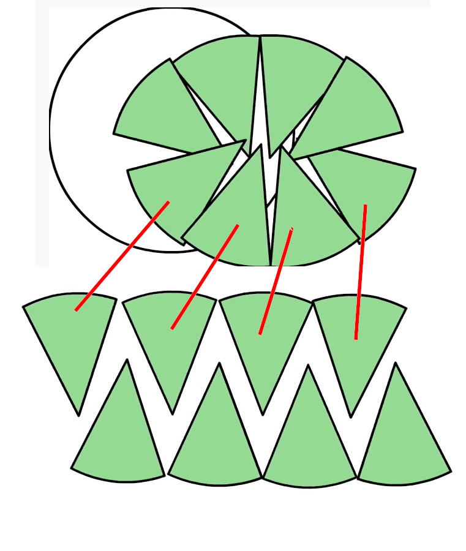

The Genius
Wednesday • April 1st 2020 • 12:22:10 am
You are a Genius.
Genius, is a collector, and a master of frameworks.
One of the most pop frameworks, is English. Or as we will call it here: The
English Framework for Advanced Human to Human Communication.
The "Double U", the 26 unsqiglies (as I call them - my original alphabet
has extra squiggly letters I never knew what to do with). And then the
comma and, Oxford Comma, the mysterious semicolon, the haunting tilde?
Rhymes.
Poems.
Songs.
Letters.
Essays.
Transcribing Lyrics, of a song that paused your time, classes, grades,
parents?
Memorizing Poems?
Quotes? To thine own... yeah you did.
Speaking. Reading. Writing.
Thorgal

Frameworks are superpowers, and your powers will call to you.
Once you have the framework down, you gain special abilities, like
Storytelling, for example.
You can warp facts to construct fantasies based on real events and beings,
now transformed into Mighty Ice Giants, maybe Dragons, Lost Worlds, and
Faster Than Light Travel.
You can encode a lifetime of experience in an exciting story with enchanted
objects, and transcendental superhero journeys, here you can easily pass on
a message across centuries. You can leave stones unturned that will mark
forks and joins that will call to others to add to your story, to keep it
alive across centuries even as English evolves.
Story of Beowulf
Land of Monsters?
My friends, the story of Grendles Mōdor remains unfinished, Ides
Aglæcwif of Ælwihta Eard; beacons her side to be writ. Was Grendles Modor a
monster, would she be an Ide then?
Was the Dragon a mere reminder, a clumsy blurb for Memento Mori or is
that just the introduction to the real story, the story that has little to
do with men like Beowulf who can't even take down a fat flying lizard
right. A story burned to the ground by the spirit of the age, the Greatest
Story Never Told, The Story of The Ides of the Old World.
Pick up the pen. Rebuild the story a thousand times, and let the version
1001 earn you a place in history.
The Dises (1909) by Dorothy Hardy.
A Pen is Mightier than a Sword.
Genius, is to answer the challenge. Ælwihta Eard, is the world of our
childhood stories, from Baba Jaga, to The One Ring, to Harry Potter, and
beyond.
Genius is to pick up the pen, and not fear sounding foolish.
Do not deny your Readers
Do not deny your stories to those who are still learning the lessons you
have already mastered.
What if your "Not good enough", will become the best they ever had?
Mightier than The Sword.
Damn kids. They're all alike.
When I was learning English, my most powerful piece of literature was The
Conscience of a Hacker, or The Hacker Manifesto. (See External Links
section for Hacker's Manifesto at Phrack Magazine)
I am wiser now, the text is for a teenager. But I feel no shame for still
holding it dear to my heart. I am glad to share with you.
The Conscience of a Hacker by
...
We explore... and you call us criminals.
We seek after knowledge... and you call us criminals.
We exist without skin color, without nationality, without religious bias...
and you call us criminals.
You build atomic bombs, you wage wars, you murder, cheat, and lie to us and
try to make us believe it's for our own good, yet we're the criminals.
Damn kids. They're all alike.
These words are still as mighty as the day I found them.
The Conscience of a Hacker read by The Mentor
You are a Genius.
Because storytelling, inspiration, sharing of wisdom, is just a part of The
English Framework for Human Communication - that you mastered without
noticing... as a child.
At the age of 15 or earlier, you master a framework almost as complex as
any of the more interesting Daughters of Philosophy (The Sciences).
It comes to you so naturally, that you don't notice it.
You think we are born with the ability for language.
But, no.
And not only do you learn it, your brain grows to match the complexity of
information and tools needed to manipulate it.
Neuro Genesis: You can grow new brain cells. Here's how by Sandrine Thuret
Genius, like Child Prodigy, is just a stepping stone. Don't stop.
You are to surpass what you think Genius is, on your way up, to growing all
the way up.
This act of transcendence will recur several times, depending how busy you
get in life.
Some things you think are one-way today; High School, Roswell,
Globalization, Content of Character, Memorable Words, Superstars,
Mokele-Mbembe, Spelling and Grammar (To use my teenage mind as example)
will change meaning, as you grow; possibly/hopefully even reverse.
Similar to how "We make use of a service already existing without paying
for what could be dirt-cheap if it wasn't run by profiteering gluttons, and
you call us criminals." turns around, as we learn that Criminal
Phreaking is just not worth the damn prison time.
My Dear, Friends, Readers. You have mastered English.
You have easily mastered something only a genius child prodigy could.
Didn't even notice it, English came so naturally, so simply - didn't it?
... and you say you are not a Genius?
Wow, just wow.
English is Complex
Let me give you a hint on you how Frameworks like these emerge evolve
across centuries.
A History of English Letters
Good Frameworks come with Easy On-boarding
Easy On-boarding means easy access to eventual mastery. It means
progressive, gradual learning and mastery.
It would be difficult, though not impossible, to learn to write words
without knowing the alphabet. English, or as I call it here "The English
Framework for Advanced Human to Human Communication" bonds really well with
our ability to learn words as a baby. The language evolved with human
learning abilities. If English words were presented without letters, it
would still be a functional, but very different language.
Fundamentally, a framework without easy on-boarding, or progressive
adaptation features is kind of useless. If there is no way to learn
something, it won't be learned.
But overall, new on-boarding can be tacked on to something that previously
had trouble with it. For example in [God Created the Integers: The
Mathematical Breakthroughs That Changed History](https://en.wikipedia.org/wiki/God_Created_the_Integers) Stephen Hawking helped
his memory by creating a history of evolution of mathematical thinking. I
view the book as a Memory Palace with emphasis on historical dates and
progression, that expands standard mathematical on-boarding and helps the
reader to a greater initial spectrum of Mathematics.
What if Schools Taught Us How to Learn by Jonathan Levi
Memorizing πr²
Do you remember memorizing πr²?
Forcing memorization of πr² or any formula, should be seen as psychological
torture, means of intimidation. It should be seen as cause for suspension
of the teacher, and review and repair of the damage they made.
Formula memorization is the same as being forced to learn English without
the use of alphabet. It is incredibly cruel.
Some young lady out there, tears in eyes can't comprehend πr², and her mind
rejects memorization, she NEEDS to know - tears in eyes - why is the r is
squared? Her mind reaching for why is the r multiplied by it self. Is there
a geometric square somehow?
Warm, but not warm enough.
A brilliant mind yearning for arriving at the formula herself, yet forced
to merely blindly accepting it, or repeating the whole year.
People who need to invent the formulas, people who have the natural
predisposition for abstract theoretical mathematics... The naturally
predisposed for abstract mechanics or Mathematics, are being forced, not
to, learn Mathematics, or be punished.
Area of a circle, how to get the formula.
Just Eyeball

Just witness that half the circumference of the circle (4 slices) are used
at the the base of the rectangle, because the other four are used up top.
It really does not matter how many divisions of the circle so as long as
reaching infinity makes for an infinitely perfect rectangle ❤
The Framework is Mightier Than The Formula
Armed with this knowledge, our young lady, can arrive at her own πr², when
needed.
But also at E=mc², and all the wonderful rest.
And so can you. My Genius Reader.
Genius Is Our Right
Genius is knowing the framework mechanics, and reinventing the formulas as
needed.
Sometimes, applying mechanics from one place by subtle analogy to another.
For example apply lessons from trains and their relativity of motion and
distortion of sound waves, to other things...
Simple Relativity - Understanding Einstein's Special Theory of Relativity
Einstein's Proof of E=mc2
Math
Math is almost too easy to bother with, it is certainly too messy when
compared to the exquisite and wonderfully unambiguous and vast world of
programming.
Basic programming is enough to visualize all the important things in
mathematics.
It was only ever intimidating because it is a primitive language meant for
paper and pencil, with an ugly problem to boot. As Math as Code notes
"Mathematical symbols can mean different things depending on the author,
context and the field of study (linear algebra, set theory, etc)."
It can be a wonderful and enlightening adventure to visit works of Newton
from the simple world of programming, but to teach Calculus on paper is to
waste your time on trivialities of a simple loop.
Let us face that today's "Alphabet of Math" is basic Programming. This is
because programming notation is not as ambiguous, and it is easier to
latch-on-to-and-pursue mathematical concepts, as trivial as they will turn
out to be to you now.
As an enormous bonus, at the end of the day you can see your new knowledge
come to life with a simple, mathematically themed program like P5js or
maybe D3, or even SVG (keep it in sync with leading Web
Technologies as they receive most attention and thus good programming,
exposure, use, and as a bonus bring a solid measure of fair employment
opportunities).
Some are moved by Ides, others by Numbers. As numbers can now come to life
when transitioning from dead paper to colorful screens, games,
visualizations.
Karlie Kloss explains how to use math with the artist in Code Studio
Easy as π
Look a the ease with which Karlie Kloss teaches real, live, moving,
interactive, Modern Math to children.
It is not just Drag and Drop programming, with works like Math as Code
children who enjoy it, get access to Theoretical Physics and Abstract
Mathematics. A child using the program that Karlie teaches with will
see little surface difference between making a rectangle and converting
matter to energy via Einstein's E=mc². A venture into the function
contents, which are not too complex as shown in the previous video, may
perhaps create a new Einstein, change the World, or Time, or better yet,
both.
In this short clip she interjects the use of variables and dynamic
calculation; as a result she creates a reusable function that creates
rectangles with a base twice the height.
For many this is a mind blowing lesson that will call to them, pull them
into the world of Math, Computers, Science, Technology.
Kode With Klossy shows what these classes are like. What real education looks like, where teachers strive to be worthy of teaching their students.
Frameworks: Why.
Genius.
Study your Frameworks.
Generations have tried to avoid Genius, and the World is hurting for it.
We are bound to this planet, chemically, biologically, even intellectually.
We are all connected.
There is no moving to Mars.
And we were never allowed to let the TV, or the talking-heads, or lairs, do
the talking - with each new generation, doubly so.
We are all connected.

Accept The Responsibility
People laugh off running out of water, but that's actually terribly simple.
It will happen like this: [U.S. drinking water widely contaminated with
'forever chemicals'](https://news.ycombinator.com/item?id=22116696)
But remember, all problems created by Humans, can be solved by Humans too.
Those That Can't Do, Teach.
Memorization is Over
Tell your teacher that memorization is over, it is useless to you.
Tell your teachers that they are not allowed to stand in your way of real
knowledge.
They are interrupting your real education by threatening to mark you down
for not following their worthless directions which can only lead to
memorization, which in turn will soon result in you forgetting what you
force-remembered.
It is not possible to retain long-term what you memorized in the way you
did it. If that is what they expect of you, then you maybe being taken
advantage of. The motive is teacher getting paid, and ultimately, school
qualifying for more funding.
GPA or not, you still need those Marvelous Frameworks; or people will
easily mislead you. One example is Vaccine Hesitancy which a lot of
people fall for, but there are more complicated and closer calls like
CFCs and Tetraethyl Lead, and now PFAS. You need to be
knowledgeable enough to foresee consequences of what is going on in the
world.
Your life depends on it. The future of this planet depends on You, don't
count on the adults, they're all going to retire of old age soon enough.
Your life depends on real education, your knowledge has impact on
everything from internal decision making, to external politics of the whole
World.
The teacher will soon retire, feel great about all the great work, and you
will become the future.
Just, take it upon yourselves to learn on your own, it is safer this way.
You can stay in school, learn in library and from audio books.
Real knowledge will always beat what you memorized and forgot.
Genius by Mark Diaz

The Future, The World
You were born a Genius. You are a Genius. It is not even that big of a
deal, you are a human with a brain, Genius is what we do. On the other end,
people saying they are better than you because they are a Genius, are sick
from poverty of mind, they got fractured, stuck. It is sad, let us hope
they feel better and catch up, but pass them on as they heal.
Keep moving forward, keep learning, the World needs you to grow, to grow
all the way up, you, and all your peers, and all generations to come.
It is the journey of self education that makes the real difference.
Begin your journey under the banner of Unrelenting Pursuit of Excellence
and Love of Wisdom.
The Future, and The World, it will all be Yours.
You are far more than Genius.
Unbreakable.
Unstoppable.
Uncontainable.
Unpredictable.
Uncontrollable.
You Are The Future.